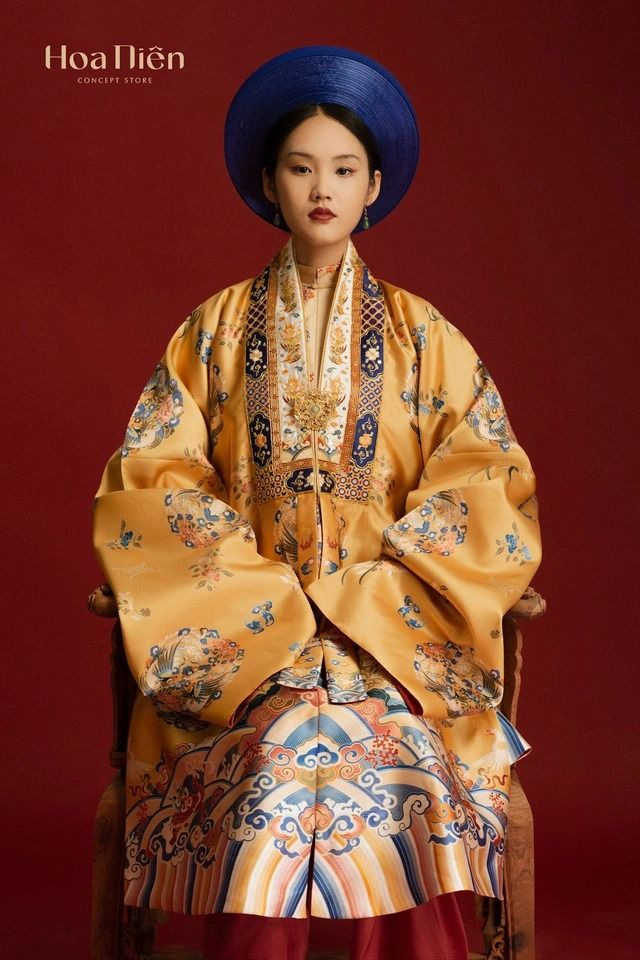

Nhật Bình
Áo nhật bình - một nét đẹp đặc trưng của xứ Huế. áo nhật bình không chỉ là một di sản thời trang cung đình mà còn là biểu
tượng văn hóa, phản ánh rõ quan niệm lễ nghi, trật tự và đạo đức của xã hội phong kiến Việt Nam. Ngày nay, áo nhật bình trở thành niềm
tự hào của dân tộc, là minh chứng sống cho vẻ đẹp trang phục truyền thống Việt Nam xưa.
Nhật bình là kiểu áo Phi phong của triều Minh, được triều Nguyễn tiếp thu và cải cách với những nét đặc trưng riêng. Áo
có phần cổ thiết kế hình chữ nhật to bản, hai vạt áo được cố định bằng dây buộc, sở dĩ áo có tên "Nhật Bình" vì khi mặc, phần
trước ngực được ghép lại thành một hình chữ nhật. Tùy vào từng cấp bậc khác nhau như hậu phi, công chúa, cung tần mà các hoa văn, màu
sắc của áo cũng khác nhau. Trừ nhật bình dành riêng cho hoàng hậu ra, còn lại các loại nhật bình khác đều có dải màu ngũ hành (lục, vàng,
xanh, trắng, đỏ) ở phần tay áo.
Vào đầu triều Nguyễn, áo nhật bình thường được phối với xiêm y màu bạch tuyết và đội mũ phượng
tùy theo từng cấp bậc trong cung. Nhưng từ cuối thế kỷ 19, áo nhật bình được phối với quần trắng và đội khăn vành bản to. Hình thức này được bảo
lưu giữ cho đến ngày nay và được phụ nữ Huế yêu thích, thường chọn làm trang phục trong các dịp lễ hội, cưới hỏi, hay các sự kiện
văn hóa truyền thống.
Đây là trang phục vốn chỉ dành cho hoàng hậu, công chúa, mệnh phụ và các bậc phu nhân được nhà vua ban thưởng thời Nguyễn.
